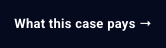
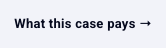
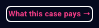
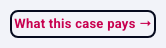
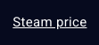
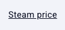

Text link
The link that leads onward: in a sentence it takes its text's size, standing alone it carries an arrow. One weight, one tracking, three tones and three sizes. Everything on this page is drawn by design/system/components/text-link.css through index.css, the same file a screen will load.
Anatomy
Counted since this case launched, never reset. How rounds are checked
What this case pays Steam price Settings| Part | Class or element | What to change there |
|---|---|---|
| The link | .link | ink (--text-link), weight 700, tracking --tracking-link, no underline; white under the pointer |
| Arrow | .link--arrow | standing alone, the link ends in an arrow and takes the 13px of a meta line |
| Tone | .link--quiet, .link--hi | quiet: soft grey, 400, underlined; white: the words of a plate of its own colour |
| Size | .link--s, .link--l | S 12 and L 16; M is the arrow's own 13; in running text no size at all |
| Press | .link--tap | the target grown by 12px above and below, the room given back so the line does not move |
Variants and sizes
Four axes. Each carries its rule, so the next screen picks by the rule instead of finding a reason again. Sizes and heights below are read from the rendered links, not from the stylesheet.
- Tone = where it stands. Pink leads onward and is the default. Quiet is for a source or a market line, a link the eye should not chase (the Steam price on a drop). White is only for a plate of its own colour, where the pink would not hold: the Steam state, the account head.
- Content = how it sits. In running text the link takes the text's size and has no arrow. Standing alone, under an answer or at the end of a block, it carries the arrow and leaves the block.
- Size = the line it stands in. S 12 for a chip's line, M 13 for a meta line (the arrow's own), L 16 for a sub line or an answer on a plate. Never a size to make a link louder.
- Press = the container.
--tap(12px of press above and below the line) where the link is a row's only target: under an answer, in a row of acts. A link in a sentence keeps its line.
| Tone | In text | S 12 | M 13 | L 16 |
|---|---|---|---|---|
| Pink | the rulesits text's size |
|||
| Quiet | Steam priceits text's size |
Not used at M or L: a source is read inside its line, in its text's size. | ||
| White, on a plate | Sign outits text's size |
Not used at M or L: a plate carries a small line. | ||
Press
The dashed line is the link's own box. Padding makes the target and a negative margin of the same size takes the room back, so a row of acts keeps its height.
When to use
A link goes somewhere: another page, another place on this one, a source. It is named for where it goes, in the destination's own words ("What this case pays", "How a withdrawal settles", "Provably fair"), never for the feeling ("Learn more", "Click here"). It is the way the product shows its numbers are checkable (design principle 1): the chance, the return and the round's proof are one link away from where they matter, and a link that sits beside a money figure never hides inside the excitement (principle 3).
Rule and anti-rule
Use it
Under an answer on Home: "What this case pays" with its arrow, --tap. In a sentence: "RTP 94.2 %, expected value 11.68 coins" going to the table that proves it.
Take another component
Doing something here and now (open, sell, sign in) is a Button, even when it is drawn flat. A row that opens its answer is a Disclosure. The way back above a page is a Breadcrumb. A figure that is also a link is the Figure as a link.
States
Live at rest, on this page's theme: point at them, reach them with Tab.
Snapshots of the same instances, dark on the left and light on the right, taken with reduced motion so each shows the face the state settles on. The base set is shot once on the pink link; after it, only a named difference.


--text-hi

--line-focus

--text-body to --text-hi- No press look. A link changes colour under the pointer and draws the ring on focus-visible, as kit.css has it; it has no pressed face, so no snapshot is shot for active.
- The white tone is the same on every state. On a plate it keeps its colour under the pointer and takes the same ring (
--line-focus), so it is not shot again. - No disabled look. A link that cannot go anywhere is not drawn as a link; it is text (D-58).
node design/kit/tools/shoot-states.js http://localhost:8765/ text-link # re-shoot after a change to text-link.css or its tokens node design/kit/tools/shoot-states.js http://localhost:8765/ text-link --check # step 9: fails if a snapshot drifted
In the code
| Token | Kind | Dark | Light |
|---|
Read live from tokens.css. Colour comes from four ink roles and the focus ring; no colour primitive is read and no component token was needed. Type and motion come straight from the primitives (--tracking-link, --size-xs, --size-chip, --size-text, --space-3).
File: design/system/components/text-link.css, loaded by design/system/index.css in the atoms' group.
<a class="link" href="...">How rounds are checked</a> <a class="link link--arrow" href="...">What this case pays</a> <a class="link link--arrow link--l" href="...">How it works</a> <a class="link link--arrow link--tap" href="...">What this case pays</a> <a class="link link--quiet" href="...">Steam price</a> <a class="link link--arrow link--hi link--s" href="...">Settings</a>
Stands on: Home, the case screen, the catalogue, Deposit, My items, Provably fair, Responsible play, Sign in. Until step 8 those screens still read kit.css; step 6 moves their markup onto this file's forms by the rename map.